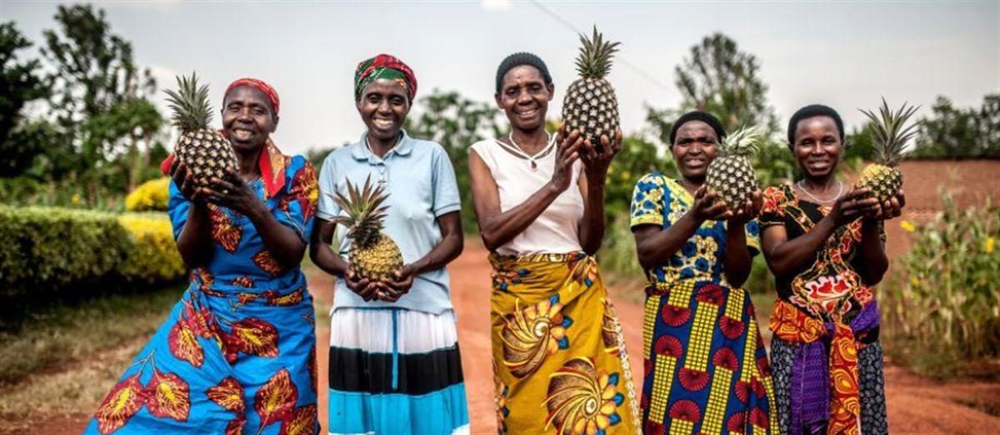
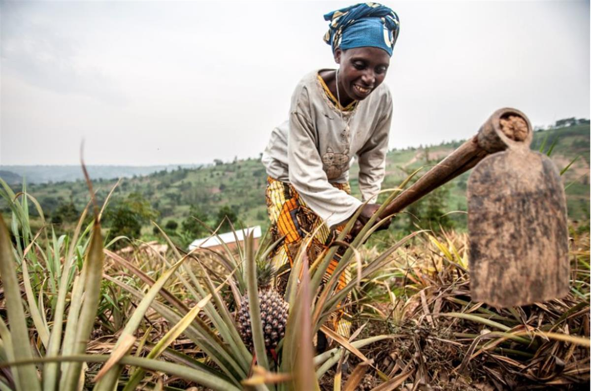
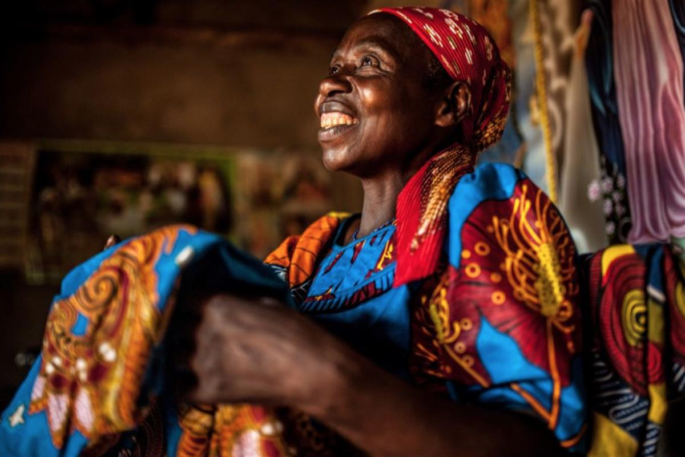

Around the globe, we work to find practical, innovative ways for people to lift themselves out of poverty and thrive. By supporting schools, to helping farmers sell their crops for a fair price, to improving access to people with HIV/AIDS to health care - our long-term development projects are transforming lives.
Around the globe, we work to find practical, innovative ways for people to lift themselves out of poverty and thrive. By supporting schools, to helping farmers sell their crops for a fair price, to improving access to people with HIV/AIDS to health care - our long-term development projects are transforming lives.
We work with communities to tackle the causes of poverty by a combination of hands on know-how, financial investment and education. We give people a voice to speak out against the laws, actions and policies that keep them in poverty.
People can escape poverty - permanently.
We think that everybody, every day, should be able to eat, drink, earn and learn. We make sure they can. We foster self-sufficiency.
When people have the power to claim their basic human rights, they can escape poverty - permanently. This is the core belief that underpins our development programs in more than 90 countries.
We help farmers get their crops to markets at a fair price. We encourage fishermen to adopt good fishing practices. We promote awareness of HIV/AIDS prevention. We help women get fairer access to the resources they need to farm. These are examples of the many different ways we work with poor people.
We stay to help people to rebuild their lives.
When a natural disaster strikes or a conflict erupts, we give immediate lifesaving assistance – but when that crisis passes, we will invariably stay to help. We work with people to rebuild their lives, secure jobs and livelihoods, and plan a better future for their families.
We also campaign for social justice to encourage pro-poor development policies, in order to end the causes of poverty.
In our development programmes, we also aim to improve poor people's resilience to future shocks and disasters. For example, our community cereal banks give poor people access to grains year-round. And we run projects to help people use water better, in order to improve yields and help in times of drought.
Our long-term development work is mainly done with local organizations and partners.
“Tuzamurane”: women pineapple farmers ‘lift one another up’ in Rwanda

Tuzamurane cooperative is located in a small village at the top of a hill in Kirehe District, Eastern Rwanda.The literal translation of Tuzamurane is ‘lift one another up’.
The cooperative specialises in growing pineapples and you can see the little spiky plants everywhere in Kirehe. It was set up ten years ago with the support of Oxfam who provided training to women in horticulture and facilitated access to markets and savings schemes.
Eighty percent of Rwandans rely on agriculture as their main source of income. Rwandan women head close to a third of agricultural households and provide almost two thirds of the labour on family farms. They are predominantly involved in small-scale production of subsistence food crops.
Despite this, they have very little control over the sale of cash crops and the income earned from it. For the most part, men control agricultural production assets in Rwanda such as land, livestock and associated enterprises.

Valerie Mukangerero, 53, works in her pineapple farm in Rwamurema village, Eastern Rwanda, Kirehe District. Since joining the Tuzamurane cooperative, Valerie has saved enough money to extend her house, buy a cow and support her family.
“Before joining the cooperative, my life was not good. I felt it was short and that there was no vision [for the future]. When I joined the cooperative, we were trained, we learned and I felt sure that I would have a good life one day. I was going to change my life.
“I feel proud that people respect me and say ‘that woman is on top!’. The thing that makes me most happy is that I have joined with others. When I earn money, I feel content. I buy the things I need without worry.”
Before the existence of the cooperative, women were growing and selling pineapples on a much smaller scale for a low price and were trapped in a cycle of poverty. One pineapple would sell for 50 Rwf ((Rwandan Francs) at farm gate or 100 Rwf at local market level. The cooperative’s pineapples are now sold at 200 Rwf.
The women members of the cooperative now grow and tend to pineapple crops on both their own, and cooperative land. The pineapples are then taken to the Tuzamurane cooperative and sold to Inyange Industries to be juiced, or dried in the in-house processing plant.

Theresie Nyirantozi, 60, admires the tailored fabric she purchased in Kirehe District, Eastern Rwanda, near her home. Since joining the Tuzamurane pineapple cooperative Theresie feels proud to no longer have to ask her husband for money to buy clothes and fabric.
“When I couldn’t afford school fees the children could not go to school, they had to stay at home. I had no peace of mind.
“What makes me proud is collaborating with my husband. In my opinion, happiness means feeling comfortable at home, getting advice from your husband and vice versa, understanding each other, and fairly enjoying your income.”
Tuzamurane produces 880 metric tones of pineapple a year and exports the dried pineapple to countries across Africa and as far away as France. The profits from sales are invested back into the business and shared between the members. Oxfam has helped create links with banks so that the women can access loans to pay for health insurance and school fees.
We also worked with Tuzamurane to achieve organic certification so that the farmers can export their produce. We are now extending that work to other women farmers. The process is currently lengthy and expensive. We are lobbying the government to relax the laws of certification and provide more support to small holder farmers. We are also providing training on how to meet the required standards for certification.
The women have seen a vast increase in their income and are now able to send their children to school, pay for healthcare, buy land, extend their homes and invest in other small businesses. They are no longer trapped in a low income cycle.
Building a better future: imagining a human economy that works for women
Supporting women to have access to quality and decent work and improve their livelihoods is vital for fulfilling women’s rights, reducing poverty and attaining broader development goals.
Women’s economic empowerment is a key part of achieving this. We need a human economy that works for women and men alike, and for everyone, not just a few.
Read the Oxfam's report “An economy that works for women”
Photos: Aurelie Marrier d'Unienville/Oxfam
SOURCE: OXFAM INTERNATIONAL